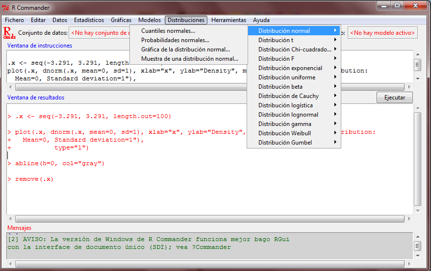
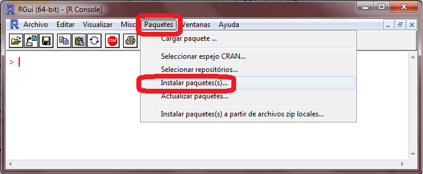
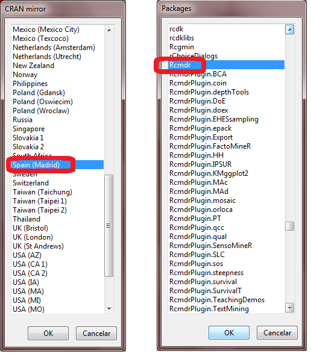

C Interfaces gráficas
Aunque la consola de R dispone de un editor básico de códido (script), puede ser recomendable trabajar con un editor de comandos más cómodo y flexible.
En los últimos años han surgido interfaces gráficas que permiten realizar las operaciones más comunes a través de periféricos como el ratón. Una lista de de estas interfaces puede ser encontrada en www.sciviews.org/SciViews-R
C.1 RStudio
Un entorno de R muy recomendable es el RStudio, http://rstudio.org:

Para instalarlo descargar el archivo de instalación de http://rstudio.org/download/desktop.
C.2 RCommander
RCommander es una de las interfaces más populares para R. Algunas de
sus ventajas son:
Se distribuye también bajo licencia GPL de GNU
Fácil instalación
Numerosa documentación en castellano
Adecuado para la iniciación en la Estadística
Introduce a la programación de
Ral mostrar el código asociado a las acciones de los menús.

C.2.1 Instalación de R-Commander
Por ejemplo, la instalación de la interfaz gráfica R-Commander se puede hacer directamente desde la ventana de consola tecleando
> install.packages("Rcmdr")Otra posibilidad es seleccionar el menú Paquetes e
Instalar paquetes...

A continuación se abrirá una nueva ventana con todos los posibles espejos, donde conviene seleccionar el espejo de Madrid.
Una vez elegido el espejo (figura de la izquierda) se seleccionará el
paquete Rcmdr (figura de la derecha).

El programa R realizará la correspondiente instalación y,
una vez finalizada, mostrará la pantalla de consola. Entonces se escribe
en la consola
>library(Rcmdr)y se abrirá la siguiente ventana de R-Commander.

La ayuda sobre este paquete se obtiene con
>help(package="Rcmdr")